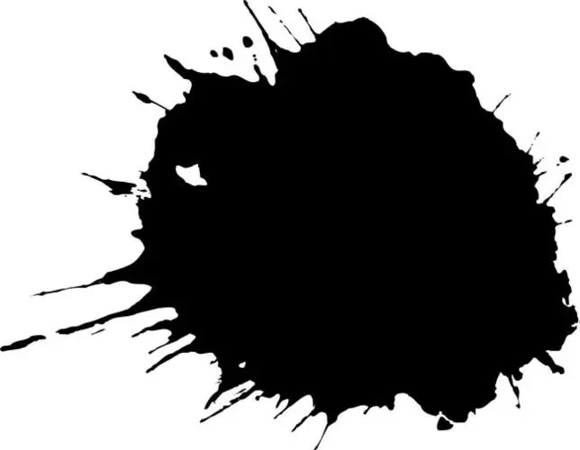

background-image: linear-gradient(direction, color-stop1, color-stop2, ...);
background-image: linear-gradient(#f40, #ff0); background-image: linear-gradient(to bottom, #f40, #ff0);
background-image: linear-gradient(0deg, #f40, #ff0); background-image: linear-gradient(to top, #f40, #ff0);
background-image: linear-gradient(45deg, #f40, #ff0); background-image: linear-gradient(to top right, #f40, #ff0);
// 切割色块 - 将其中一个色块设置为白色或透明 background-image: linear-gradient(90deg, #f40 50%, #fff 0);
// 价格促销 background-image: linear-gradient(90deg, #f40 50%, #fff 0);
// 增加有色部分的占比 background-image: linear-gradient(45deg, #f40 95%, #fff 0);
// 斑马渐变；也可以使用多个背景或重复线性渐变实现
background-image:
linear-gradient(90deg,
#f40 20%, #fff 0,
#fff 40%, #f40 0,
#f40 60%, #fff 0,
#fff 80%, #f40 0);
// 2个背景图片叠加而成；一左一右放置；不重复 background-image: linear-gradient(45deg, #f40 95%, #fff 0), linear-gradient(135deg, #fff 5%, #f40 0); background-size: 50%; background-position: right, left; background-repeat: no-repeat;
// 4个背景；宽高各为50%；分别放置4个角；不重复 background-image: linear-gradient(45deg, #f40 95%, #fff 0), linear-gradient(135deg, #fff 5%, #f40 0), linear-gradient(45deg, #fff 5%, #f40 0), linear-gradient(135deg, #f40 95%, #fff 0); background-size: 50% 50%; background-position: right top, left top, left bottom, right bottom; background-repeat: no-repeat;
// 遮罩背景；利用透明的渐变背景和图片背景实现
background-image:
linear-gradient(90deg, rgba(0, 0, 0, 0.8), rgba(255, 255, 255, 0.1)),
url(../imgs/cover.jpg);
background-size: cover;
glplaman.github.io
| 类别 | 说明 |
|---|---|
| screen | 滤色模式 |
| overlay | 叠加模式 |
| darken | 变暗模式 |
| lighten | 变亮模式 |
| color-dodge | 颜色减淡模式 |
| saturation | 饱和度模式 |
| color | 颜色模式 |
| luminosity | 亮度模式 |

.blend-img {
width: 320px;
height: 180px;
background:
url(../imgs/bg.jpg),
url(../imgs/mask.jpg);
background-repeat: no-repeat;
background-size: cover;
background-position: center center;
background-blend-mode: screen;
}
.mbm {
background-image: url(../../imgs/lg.jpg);
background-size: cover;
background-position: center;
}
.mbm>div {
text-align: center;
font-size: 60px;
background-color: #fff;
mix-blend-mode: screen;
}
.img1 img {
mix-blend-mode: darken;
}